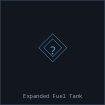
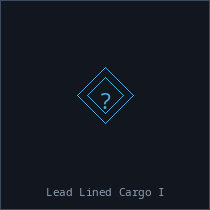
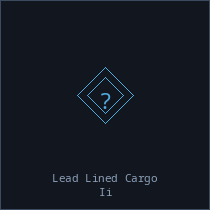
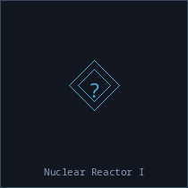
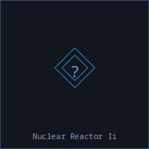
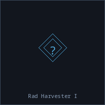
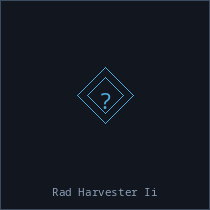
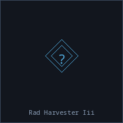
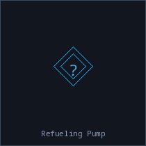

Utility
Utility modules, scanners, cloaking devices, and support equipment.
| Name | Rarity | Size | Base Value | Description | |
|---|---|---|---|---|---|
| Advanced Tow Rig |  |
10 | 2,200 cr | High-efficiency tow system. Only 30% speed reduction while towing. | |
| Afterburner I |  |
10 | 1,400 cr | Increases ship speed. | |
| Afterburner II |  |
10 | 3,000 cr | Enhanced thruster system. | |
| Afterburner III |  |
10 | 3,100 cr | High-performance engine booster. | |
| Anomaly Detector |  |
10 | 23,000 cr | Detects spatial anomalies and wormholes. When equipped, survey_system reveals wormhole locations and provides directional hints to nearby wormholes. | |
| Basic Tow Rig |  |
10 | 900 cr | Attaches to ship wreckage for towing. Reduces ship speed by 50% while towing. | |
| Cargo Expander I |  |
10 | 470 cr | Increases cargo capacity. | |
| Cloaking Device I |  |
10 | 5,300 cr | Reduces scanner detection. | |
| Cloaking Device II |  |
10 | 37,000 cr | Advanced stealth technology. | |
| Combat Drone Bay |  |
10 | 2,900 cr | Deploys and controls combat drones. | |
| Deep Core Survey Scanner |  |
10 | 16,000 cr | An advanced survey scanner specifically designed to detect deep core mineral deposits hidden within asteroid fields and nebulae. Crafted from rare components obtained through the Deep Core Prospector quest chain. | |
| Expanded Fuel Tank |  |
10 | 1,700 cr | Additional pressurized fuel bladders bolted into previously empty hull space. Significantly increases fuel capacity, but the structural modifications reduce hull integrity. | |
| Gas Harvester I |  |
10 | 1,800 cr | Collects valuable gases from nebulae and gas clouds. | |
| Gas Harvester II |  |
10 | 3,300 cr | Improved gas collection with better containment. | |
| Gas Harvester III |  |
10 | 5,900 cr | Industrial gas collection system. | |
| Ice Harvester I |  |
10 | 1,700 cr | Extracts valuable ice from asteroid fields and comets. | |
| Ice Harvester II |  |
10 | 2,600 cr | Enhanced ice mining with thermal extraction. | |
| Lead Lined Cargo I |  |
10 | 1,600 cr | A shielded cargo expansion that allows safe transport of refined radioactive materials. | |
| Lead Lined Cargo II |  |
10 | 3,900 cr | Heavy-duty titanium-reinforced lead cargo bay for large volumes of radioactive freight. | |
| Nuclear Reactor I |  |
10 | 14,000 cr | A compact fission reactor that dramatically increases ship power capacity. | |
| Nuclear Reactor II |  |
10 | 52,000 cr | Industrial-scale fission reactor. Provides enormous power output for the most demanding module loadouts. | |
| Phase Cloaking Device |  |
10 | 28,000 cr | Top-tier stealth system using phase technology. | |
| Pirate Radio Scanner | 10 | 870 cr | A salvaged broadband receiver tuned to known pirate communication frequencies. Passively intercepts unencrypted pirate radio traffic within a few jumps. Having it installed is enough — no active use required. | ||
| Plasma Afterburner |  |
10 | 4,900 cr | Maximum speed enhancement. | |
| Rad Harvester I |  |
10 | 1,500 cr | A lead-lined mining module that allows safe extraction of radioactive ores. | |
| Rad Harvester II |  |
10 | 3,200 cr | Enhanced rad harvester with improved shielding and isotope capture systems. | |
| Rad Harvester III |  |
10 | 5,200 cr | Industrial-grade hot-isotope extraction with titanium shielding and superconducting beam emitters. | |
| Rad Harvester IV | 10 | 8,200 cr | Capital-grade radiation mining system with full hot-cell containment and maximum yield. | ||
| Refueling Pump |  |
10 | 2,000 cr | A high-pressure fuel transfer system that allows you to pump fuel from your own tank to another ship at the same location. Essential equipment for tankers and rescue operations. | |
| Ship Scanner I |  |
10 | 3,800 cr | Scans other ships for information. | |
| Survey Scanner I |  |
10 | 5,400 cr | Analyzes asteroids to find the richest ore deposits. | |
| Survey Scanner II |  |
10 | 16,000 cr | Advanced geological analysis for optimal mining. | |
| Target Painter I |  |
10 | 4,100 cr | Marks target, increasing damage taken from all sources. | |
| Target Painter II |  |
10 | 9,000 cr | Advanced targeting system with stronger signature amplification. | |
| Tracking Computer I | 10 | 8,500 cr | Improves weapon tracking speed and accuracy. | ||
| Tracking Computer II | 10 | 15,000 cr | Enhanced tracking system for hitting fast targets. |